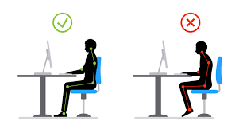

¿Qué son los riesgos ergonómicos?
Son aquellos relacionados con malas posturas, movimientos repetitivos, levantamiento de peso o uso prolongado de computadoras sin descansos. Pueden generar lesiones musculares, fatiga o dolores crónicos si no se aplican buenas prácticas.
Buenas prácticas ergonómicas
- Usar sillas con respaldo adecuado.
- Trabajar con la pantalla a la altura de los ojos.
- Hacer pausas activas cada 30-45 minutos.
- Levantar peso flexionando rodillas y no la espalda.
- Organizar el puesto de trabajo para evitar torsiones.
Imagen ilustrativa
Más información
Puedes consultar más sobre este tema aca.